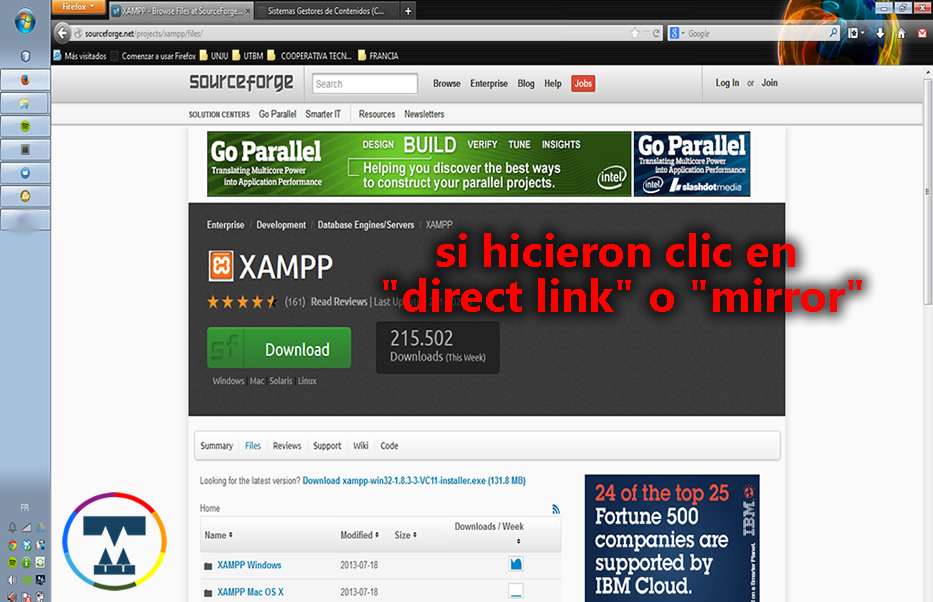
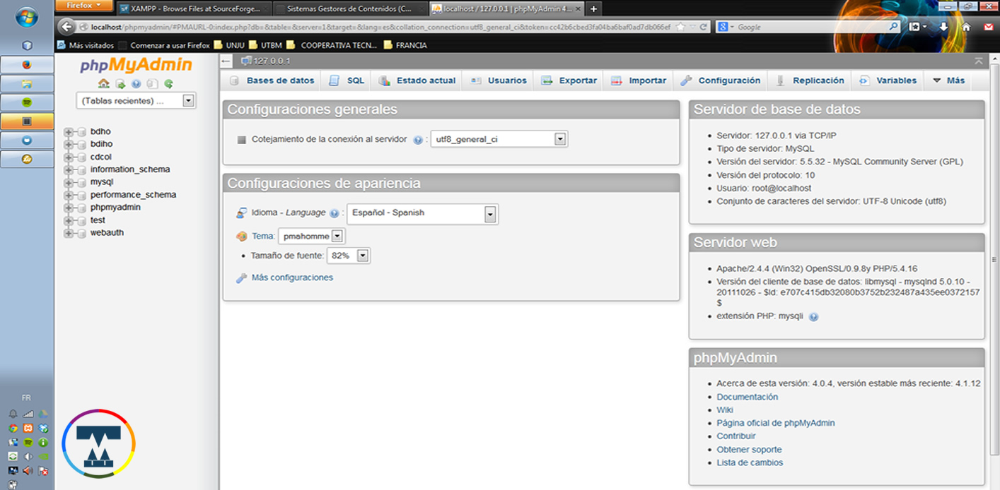

#JTLDW
Sistemas de Gestión de Contenidos
Disertantes: APU Anahi Aramayo / @Anahi_Aramayo
APU Carlos Ochoa / @t_carlosochoa
Tesista Alberto Cuba / Est.Av. Sebastian Madrid /XAMPP para Windows
Un software gratuito que nos permite instalar una distribución de Apache que contiene MySQL, PHP, Perl y todo lo necesario para correr y gestionar un sitio web.
¿Cómo instalo XAMPP?
¿Cómo instalo XAMPP?
¿Cómo instalo XAMPP?
Problems with the download? Please use this direct link, or try another mirror.
¿Cómo instalo XAMPP?
Cuando termine la descarga, entrar a la carpeta correspondiente y ejecutar el instalador:
¿Cómo instalo XAMPP?
Mensajes importantes a tener en cuenta …
¿Cómo instalo XAMPP?
¿Cómo instalo XAMPP?
Panel de Control
Carpeta de instalación.
Carpeta de instalación.
Verificar la instalación.
Verificar la instalación.
Verificar la instalación.
XAMPP para GNU/Linux
La mayoria de las distribuciones de GNU/Linux estan soportadas. Incluyendo Debian, RedHat, CentOS, Ubuntu, Fedora, Gentoo, Arch, SUSE.
¿Cómo instalo XAMPP?
Elige la arquitectura para tu Linux OS, versión de 32-bits o de 64-bits.
Cambia los permisos al instalador
chmod 755 xampp-linux-*-installer.run
Ejecuta el instalador
sudo ./xampp-linux-*-installer.run
Eso es todo. XAMPP está ahora instalado en el directorio /opt/lampp.
¿Cómo inicio XAMPP?
Para iniciar XAMPP simplemente ejecuta este comando:
sudo /opt/lampp/lampp start
Deberías ver ahora algo como esto en tu pantalla:
Starting XAMPP 1.8.2...
LAMPP: Starting Apache...
LAMPP: Starting MySQL...
LAMPP started.
Ready. Apache and MySQL are running.
Si recibes algún mensaje de error visita nuestra comunidad para obtener ayuda
¿Cómo paro XAMPP?
Para parar XAMPP simplemente ejecuta este comando:
sudo /opt/lampp/lampp stop
Deberías ver ahora algo como esto en tu pantalla:
Stopping XAMPP 1.8.2...
LAMPP: Stopping Apache...
LAMPP: Stopping MySQL...
LAMPP stopped.
Si recibes algún mensaje de error visita nuestra comunidad para obtener ayuda
¿Cómo compruebo que todo ha ido bien?
Escribe la siguiente URL en tu navegador favorito:
http://localhost
Ahora deberías ver la página de inicio de XAMPP, que contiene algunos links para comprobar el estado del software instalado y algunos ejemplos de programación.
¿Está XAMPP listo para producción?
XAMPP no está pensado para uso en producción, sino para entornos de desarrollo. XAMPP está configurado de forma que sea tan abierto como sea posible, permitiendo al desarrollador hacer lo que quiera. En entornos de desarrollo esto es magnífico pero en un entorno de producción puede ser fatal.
A continuación se muestra una lista de posibles fallos de seguridad en XAMPP:
- El administrador de MySQL (root) no tiene password.
- El proceso MySQL está accesible a través de la red.
- ProFTPD usa la contraseña "lampp" para el usuario "daemon".
- PhpMyAdmin está accesible a través de la red.
- Los ejemplos están accesible a través de la red
Para arreglar la mayoría de las debilidades de seguridad, simplemente ejecuta el siguiente comando:
sudo /opt/lampp/lampp security
Esto inicia una pequeña comprobación de seguridad y hace tu instalación de XAMPP más segura. Por ejemplo protege las páginas de prueba de XAMPP por una combinación de usuario ('lampp') y contraseña.
Joomla 2.5.X-Instalación
Una vez instalado el entorno de ejecución para Joomla 2.5.X (XAMPP), se procede a su instalación.
Entramos a nuestro navegador e introducimos la siguiente dirección:
http://localhost/
Y comenzamos con los pasos de instalación
Paso 1: Selección del idioma
Paso 2: Comprobaciones
Joomla! comprueba las versiones de PHP y MySQL instaladas y sus configuraciones para ver que todo está correcto para su instalación.
Paso 3: Licencia
Joomla nos muestra la licencia de uso.
Paso 4: Base de Datos
Ponemos los datos de configuración de la Base de Datos.
Paso 5: Configuración del FTP
Para una instalación en local no nos hace falta.

Paso 6: Configuración del Sitio Web.
Nombre del Sitio y datos de la cuenta del administrador. Opcionalmente podremos cargar los datos de ejemplo que nos proporciona Joomla en su instalación.
Paso 7: Finalizar
Pantalla de finalización del proceso de instalación en la cual se nos obliga, por temas de seguridad, a eliminar la carpeta "installation" de nuestro directorio.